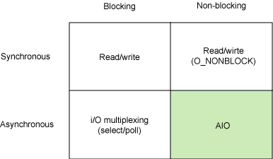

Tim Jones 是一名嵌入式软件工程师，他是 GNU/Linux Application Programming、AI Application Programming 以及 BSD Sockets Programming from a Multilanguage Perspective 等书的作者。他的工程背景非常广泛，从同步宇宙飞船的内核开发到嵌入式架构设计，再到网络协议的开发。Tim 是 Emulex Corp. 的一名资深软件工程师。
Tim Jones 是一名嵌入式软件工程师，他是 GNU/Linux Application Programming、AI Application Programming 以及 BSD Sockets Programming from a Multilanguage Perspective 等书的作者。他的工程背景非常广泛，从同步宇宙飞船的内核开发到嵌入式架构设计，再到网络协议的开发。Tim 是 Emulex Corp. 的一名资深软件工程师。

在 IBM Bluemix 云平台上开发并部署您的下一个应用。
AIO 简介
Linux 异步 I/O 是 Linux 内核中提供的一个相当新的增强。它是 2.6 版本内核的一个标准特性，但是我们在 2.4 版本内核的补丁中也可以找到它。AIO 背后的基本思想是允许进程发起很多 I/O 操作，而不用阻塞或等待任何操作完成。稍后或在接收到 I/O 操作完成的通知时，进程就可以检索 I/O 操作的结果。
I/O 模型
在深入介绍 AIO API 之前，让我们先来探索一下 Linux 上可以使用的不同 I/O 模型。这并不是一个详尽的介绍，但是我们将试图介绍最常用的一些模型来解释它们与异步 I/O 之间的区别。图 1 给出了同步和异步模型，以及阻塞和非阻塞的模型。
图 1. 基本 Linux I/O 模型的简单矩阵
每个 I/O 模型都有自己的使用模式，它们对于特定的应用程序都有自己的优点。本节将简要对其一一进行介绍。
同步阻塞 I/O
最常用的一个模型是同步阻塞 I/O 模型。在这个模型中，用户空间的应用程序执行一个系统调用，这会导致应用程序阻塞。这意味着应用程序会一直阻塞，直到系统调用完成为止（数据传输完成或发生错误）。调用应用程序处于一种不再消费 CPU 而只是简单等待响应的状态，因此从处理的角度来看，这是非常有效的。
图 2 给出了传统的阻塞 I/O 模型，这也是目前应用程序中最为常用的一种模型。其行为非常容易理解，其用法对于典型的应用程序来说都非常有效。在调用
read 系统调用时，应用程序会阻塞并对内核进行上下文切换。然后会触发读操作，当响应返回时（从我们正在从中读取的设备中返回），数据就被移动到用户空间的缓冲区中。然后应用程序就会解除阻塞（read 调用返回）。
图 2. 同步阻塞 I/O 模型的典型流程

从应用程序的角度来说，read 调用会延续很长时间。实际上，在内核执行读操作和其他工作时，应用程序的确会被阻塞。
同步非阻塞 I/O
同步阻塞 I/O 的一种效率稍低的变种是同步非阻塞 I/O。在这种模型中，设备是以非阻塞的形式打开的。这意味着 I/O 操作不会立即完成，read 操作可能会返回一个错误代码，说明这个命令不能立即满足（EAGAIN 或
EWOULDBLOCK），如图 3 所示。
图 3. 同步非阻塞 I/O 模型的典型流程

非阻塞的实现是 I/O 命令可能并不会立即满足，需要应用程序调用许多次来等待操作完成。这可能效率不高，因为在很多情况下，当内核执行这个命令时，应用程序必须要进行忙碌等待，直到数据可用为止，或者试图执行其他工作。正如图 3 所示的一样，这个方法可以引入 I/O 操作的延时，因为数据在内核中变为可用到用户调用 read 返回数据之间存在一定的间隔，这会导致整体数据吞吐量的降低。
异步阻塞 I/O
另外一个阻塞解决方案是带有阻塞通知的非阻塞 I/O。在这种模型中，配置的是非阻塞 I/O，然后使用阻塞 select 系统调用来确定一个 I/O 描述符何时有操作。使 select 调用非常有趣的是它可以用来为多个描述符提供通知，而不仅仅为一个描述符提供通知。对于每个提示符来说，我们可以请求这个描述符可以写数据、有读数据可用以及是否发生错误的通知。
图 4. 异步阻塞 I/O 模型的典型流程 (select)

select 调用的主要问题是它的效率不是非常高。尽管这是异步通知使用的一种方便模型，但是对于高性能的 I/O 操作来说不建议使用。
异步非阻塞 I/O（AIO）
最后，异步非阻塞 I/O 模型是一种处理与 I/O 重叠进行的模型。读请求会立即返回，说明 read 请求已经成功发起了。在后台完成读操作时，应用程序然后会执行其他处理操作。当 read 的响应到达时，就会产生一个信号或执行一个基于线程的回调函数来完成这次 I/O 处理过程。
图 5. 异步非阻塞 I/O 模型的典型流程

在一个进程中为了执行多个 I/O 请求而对计算操作和 I/O 处理进行重叠处理的能力利用了处理速度与 I/O 速度之间的差异。当一个或多个 I/O 请求挂起时，CPU 可以执行其他任务；或者更为常见的是，在发起其他 I/O 的同时对已经完成的 I/O 进行操作。
下一节将深入介绍这种模型，探索这种模型使用的 API，然后展示几个命令。
异步 I/O 的动机
从前面 I/O 模型的分类中，我们可以看出 AIO 的动机。这种阻塞模型需要在 I/O 操作开始时阻塞应用程序。这意味着不可能同时重叠进行处理和 I/O 操作。同步非阻塞模型允许处理和 I/O 操作重叠进行，但是这需要应用程序根据重现的规则来检查 I/O 操作的状态。这样就剩下异步非阻塞 I/O 了，它允许处理和 I/O 操作重叠进行，包括 I/O 操作完成的通知。
除了需要阻塞之外，select 函数所提供的功能（异步阻塞 I/O）与 AIO 类似。不过，它是对通知事件进行阻塞，而不是对 I/O 调用进行阻塞。
Linux 上的 AIO 简介
本节将探索 Linux 的异步 I/O 模型，从而帮助我们理解如何在应用程序中使用这种技术。
在传统的 I/O 模型中，有一个使用惟一句柄标识的 I/O 通道。在 UNIX® 中，这些句柄是文件描述符（这对等同于文件、管道、套接字等等）。在阻塞 I/O 中，我们发起了一次传输操作，当传输操作完成或发生错误时，系统调用就会返回。
在异步非阻塞 I/O 中，我们可以同时发起多个传输操作。这需要每个传输操作都有惟一的上下文，这样我们才能在它们完成时区分到底是哪个传输操作完成了。在 AIO 中，这是一个 aiocb（AIO I/O Control Block）结构。这个结构包含了有关传输的所有信息，包括为数据准备的用户缓冲区。在产生 I/O （称为完成）通知时，aiocb 结构就被用来惟一标识所完成的 I/O 操作。这个 API 的展示显示了如何使用它。
AIO API
AIO 接口的 API 非常简单，但是它为数据传输提供了必需的功能，并给出了两个不同的通知模型。表 1 给出了 AIO 的接口函数，本节稍后会更详细进行介绍。
表 1. AIO 接口 API
| API 函数 | 说明 |
|---|---|
aio_read | 请求异步读操作 |
aio_error | 检查异步请求的状态 |
aio_return | 获得完成的异步请求的返回状态 |
aio_write | 请求异步写操作 |
aio_suspend | 挂起调用进程，直到一个或多个异步请求已经完成（或失败） |
aio_cancel | 取消异步 I/O 请求 |
lio_listio | 发起一系列 I/O 操作 |
每个 API 函数都使用 aiocb 结构开始或检查。这个结构有很多元素，但是清单 1 仅仅给出了需要（或可以）使用的元素。
清单 1. aiocb 结构中相关的域
struct aiocb {
int aio_fildes; // File Descriptor
int aio_lio_opcode; // Valid only for lio_listio (r/w/nop)
volatile void *aio_buf; // Data Buffer
size_t aio_nbytes; // Number of Bytes in Data Buffer
struct sigevent aio_sigevent; // Notification Structure
/* Internal fields */
...
};sigevent 结构告诉 AIO 在 I/O 操作完成时应该执行什么操作。我们将在 AIO 的展示中对这个结构进行探索。现在我们将展示各个 AIO 的 API 函数是如何工作的，以及我们应该如何使用它们。
aio_read
aio_read 函数请求对一个有效的文件描述符进行异步读操作。这个文件描述符可以表示一个文件、套接字甚至管道。aio_read 函数的原型如下：
int aio_read( struct aiocb *aiocbp );
aio_read 函数在请求进行排队之后会立即返回。如果执行成功，返回值就为 0；如果出现错误，返回值就为 -1，并设置 errno 的值。
要执行读操作，应用程序必须对 aiocb 结构进行初始化。下面这个简短的例子就展示了如何填充 aiocb 请求结构，并使用 aio_read 来执行异步读请求（现在暂时忽略通知）操作。它还展示了 aio_error 的用法，不过我们将稍后再作解释。
清单 2. 使用 aio_read 进行异步读操作的例子
#include <aio.h>
...
int fd, ret;
struct aiocb my_aiocb;
fd = open( "file.txt", O_RDONLY );
if (fd < 0) perror("open");
/* Zero out the aiocb structure (recommended) */
bzero( (char *)&my_aiocb, sizeof(struct aiocb) );
/* Allocate a data buffer for the aiocb request */
my_aiocb.aio_buf = malloc(BUFSIZE+1);
if (!my_aiocb.aio_buf) perror("malloc");
/* Initialize the necessary fields in the aiocb */
my_aiocb.aio_fildes = fd;
my_aiocb.aio_nbytes = BUFSIZE;
my_aiocb.aio_offset = 0;
ret = aio_read( &my_aiocb );
if (ret < 0) perror("aio_read");
while ( aio_error( &my_aiocb ) == EINPROGRESS ) ;
if ((ret = aio_return( &my_iocb )) > 0) {
/* got ret bytes on the read */
} else {
/* read failed, consult errno */
}在清单 2 中，在打开要从中读取数据的文件之后，我们就清空了 aiocb 结构，然后分配一个数据缓冲区。并将对这个数据缓冲区的引用放到 aio_buf 中。然后，我们将 aio_nbytes 初始化成缓冲区的大小。并将 aio_offset 设置成 0（该文件中的第一个偏移量）。我们将 aio_fildes 设置为从中读取数据的文件描述符。在设置这些域之后，就调用 aio_read 请求进行读操作。我们然后可以调用 aio_error 来确定 aio_read 的状态。只要状态是 EINPROGRESS，就一直忙碌等待，直到状态发生变化为止。现在，请求可能成功，也可能失败。
注意使用这个 API 与标准的库函数从文件中读取内容是非常相似的。除了 aio_read 的一些异步特性之外，另外一个区别是读操作偏移量的设置。在传统的 read 调用中，偏移量是在文件描述符上下文中进行维护的。对于每个读操作来说，偏移量都需要进行更新，这样后续的读操作才能对下一块数据进行寻址。对于异步 I/O 操作来说这是不可能的，因为我们可以同时执行很多读请求，因此必须为每个特定的读请求都指定偏移量。
aio_error
aio_error 函数被用来确定请求的状态。其原型如下：
int aio_error( struct aiocb *aiocbp );
这个函数可以返回以下内容：
EINPROGRESS，说明请求尚未完成ECANCELLED，说明请求被应用程序取消了-1，说明发生了错误，具体错误原因可以查阅errno
aio_return
异步 I/O 和标准块 I/O 之间的另外一个区别是我们不能立即访问这个函数的返回状态，因为我们并没有阻塞在 read 调用上。在标准的 read 调用中，返回状态是在该函数返回时提供的。但是在异步 I/O 中，我们要使用 aio_return 函数。这个函数的原型如下：
ssize_t aio_return( struct aiocb *aiocbp );
只有在 aio_error 调用确定请求已经完成（可能成功，也可能发生了错误）之后，才会调用这个函数。aio_return 的返回值就等价于同步情况中 read 或 write 系统调用的返回值（所传输的字节数，如果发生错误，返回值就为 -1）。
aio_write
aio_write 函数用来请求一个异步写操作。其函数原型如下：
int aio_write( struct aiocb *aiocbp );
aio_write 函数会立即返回，说明请求已经进行排队（成功时返回值为 0，失败时返回值为 -1，并相应地设置 errno）。
这与 read 系统调用类似，但是有一点不一样的行为需要注意。回想一下对于 read 调用来说，要使用的偏移量是非常重要的。然而，对于 write 来说，这个偏移量只有在没有设置 O_APPEND 选项的文件上下文中才会非常重要。如果设置了 O_APPEND，那么这个偏移量就会被忽略，数据都会被附加到文件的末尾。否则，aio_offset 域就确定了数据在要写入的文件中的偏移量。
aio_suspend
我们可以使用 aio_suspend 函数来挂起（或阻塞）调用进程，直到异步请求完成为止，此时会产生一个信号，或者发生其他超时操作。调用者提供了一个 aiocb 引用列表，其中任何一个完成都会导致 aio_suspend 返回。 aio_suspend 的函数原型如下：
int aio_suspend( const struct aiocb *const cblist[],
int n, const struct timespec *timeout );aio_suspend 的使用非常简单。我们要提供一个 aiocb 引用列表。如果任何一个完成了，这个调用就会返回 0。否则就会返回 -1，说明发生了错误。请参看清单 3。
清单 3. 使用 aio_suspend 函数阻塞异步 I/O
struct aioct *cblist[MAX_LIST] /* Clear the list. */ bzero( (char *)cblist, sizeof(cblist) ); /* Load one or more references into the list */ cblist[0] = &my_aiocb; ret = aio_read( &my_aiocb ); ret = aio_suspend( cblist, MAX_LIST, NULL );
注意，aio_suspend 的第二个参数是 cblist 中元素的个数，而不是 aiocb 引用的个数。cblist 中任何 NULL 元素都会被 aio_suspend 忽略。
如果为 aio_suspend 提供了超时，而超时情况的确发生了，那么它就会返回 -1，errno 中会包含 EAGAIN。
aio_cancel
aio_cancel 函数允许我们取消对某个文件描述符执行的一个或所有 I/O 请求。其原型如下：
int aio_cancel( int fd, struct aiocb *aiocbp );
要取消一个请求，我们需要提供文件描述符和 aiocb 引用。如果这个请求被成功取消了，那么这个函数就会返回 AIO_CANCELED。如果请求完成了，这个函数就会返回 AIO_NOTCANCELED。
要取消对某个给定文件描述符的所有请求，我们需要提供这个文件的描述符，以及一个对 aiocbp 的 NULL 引用。如果所有的请求都取消了，这个函数就会返回 AIO_CANCELED；如果至少有一个请求没有被取消，那么这个函数就会返回 AIO_NOT_CANCELED；如果没有一个请求可以被取消，那么这个函数就会返回 AIO_ALLDONE。我们然后可以使用 aio_error 来验证每个 AIO 请求。如果这个请求已经被取消了，那么 aio_error 就会返回 -1，并且 errno 会被设置为 ECANCELED。
lio_listio
最后，AIO 提供了一种方法使用 lio_listio API 函数同时发起多个传输。这个函数非常重要，因为这意味着我们可以在一个系统调用（一次内核上下文切换）中启动大量的 I/O 操作。从性能的角度来看，这非常重要，因此值得我们花点时间探索一下。lio_listio API 函数的原型如下：
int lio_listio( int mode, struct aiocb *list[], int nent,
struct sigevent *sig );mode 参数可以是 LIO_WAIT 或 LIO_NOWAIT。LIO_WAIT 会阻塞这个调用，直到所有的 I/O 都完成为止。在操作进行排队之后，LIO_NOWAIT 就会返回。list 是一个 aiocb 引用的列表，最大元素的个数是由 nent 定义的。注意 list 的元素可以为 NULL，lio_listio 会将其忽略。sigevent 引用定义了在所有 I/O 操作都完成时产生信号的方法。
对于 lio_listio 的请求与传统的 read 或 write 请求在必须指定的操作方面稍有不同，如清单 4 所示。
清单 4. 使用 lio_listio 函数发起一系列请求
struct aiocb aiocb1, aiocb2; struct aiocb *list[MAX_LIST]; ... /* Prepare the first aiocb */ aiocb1.aio_fildes = fd; aiocb1.aio_buf = malloc( BUFSIZE+1 ); aiocb1.aio_nbytes = BUFSIZE; aiocb1.aio_offset = next_offset; aiocb1.aio_lio_opcode = LIO_READ; ... bzero( (char *)list, sizeof(list) ); list[0] = &aiocb1; list[1] = &aiocb2; ret = lio_listio( LIO_WAIT, list, MAX_LIST, NULL );
对于读操作来说，aio_lio_opcode 域的值为 LIO_READ。对于写操作来说，我们要使用 LIO_WRITE，不过 LIO_NOP 对于不执行操作来说也是有效的。
AIO 通知
现在我们已经看过了可用的 AIO 函数，本节将深入介绍对异步通知可以使用的方法。我们将通过信号和函数回调来探索异步函数的通知机制。
使用信号进行异步通知
使用信号进行进程间通信（IPC）是 UNIX 中的一种传统机制，AIO 也可以支持这种机制。在这种范例中，应用程序需要定义信号处理程序，在产生指定的信号时就会调用这个处理程序。应用程序然后配置一个异步请求将在请求完成时产生一个信号。作为信号上下文的一部分，特定的 aiocb 请求被提供用来记录多个可能会出现的请求。清单 5 展示了这种通知方法。
清单 5. 使用信号作为 AIO 请求的通知
void setup_io( ... )
{
int fd;
struct sigaction sig_act;
struct aiocb my_aiocb;
...
/* Set up the signal handler */
sigemptyset(&sig_act.sa_mask);
sig_act.sa_flags = SA_SIGINFO;
sig_act.sa_sigaction = aio_completion_handler;
/* Set up the AIO request */
bzero( (char *)&my_aiocb, sizeof(struct aiocb) );
my_aiocb.aio_fildes = fd;
my_aiocb.aio_buf = malloc(BUF_SIZE+1);
my_aiocb.aio_nbytes = BUF_SIZE;
my_aiocb.aio_offset = next_offset;
/* Link the AIO request with the Signal Handler */
my_aiocb.aio_sigevent.sigev_notify = SIGEV_SIGNAL;
my_aiocb.aio_sigevent.sigev_signo = SIGIO;
my_aiocb.aio_sigevent.sigev_value.sival_ptr = &my_aiocb;
/* Map the Signal to the Signal Handler */
ret = sigaction( SIGIO, &sig_act, NULL );
...
ret = aio_read( &my_aiocb );
}
void aio_completion_handler( int signo, siginfo_t *info, void *context )
{
struct aiocb *req;
/* Ensure it's our signal */
if (info->si_signo == SIGIO) {
req = (struct aiocb *)info->si_value.sival_ptr;
/* Did the request complete? */
if (aio_error( req ) == 0) {
/* Request completed successfully, get the return status */
ret = aio_return( req );
}
}
return;
}在清单 5 中，我们在 aio_completion_handler 函数中设置信号处理程序来捕获 SIGIO 信号。然后初始化
aio_sigevent 结构产生
SIGIO 信号来进行通知（这是通过 sigev_notify 中的 SIGEV_SIGNAL 定义来指定的）。当读操作完成时，信号处理程序就从该信号的 si_value 结构中提取出 aiocb，并检查错误状态和返回状态来确定 I/O 操作是否完成。
对于性能来说，这个处理程序也是通过请求下一次异步传输而继续进行 I/O 操作的理想地方。采用这种方式，在一次数据传输完成时，我们就可以立即开始下一次数据传输操作。
使用回调函数进行异步通知
另外一种通知方式是系统回调函数。这种机制不会为通知而产生一个信号，而是会调用用户空间的一个函数来实现通知功能。我们在 sigevent 结构中设置了对 aiocb 的引用，从而可以惟一标识正在完成的特定请求。请参看清单 6。
清单 6. 对 AIO 请求使用线程回调通知
void setup_io( ... )
{
int fd;
struct aiocb my_aiocb;
...
/* Set up the AIO request */
bzero( (char *)&my_aiocb, sizeof(struct aiocb) );
my_aiocb.aio_fildes = fd;
my_aiocb.aio_buf = malloc(BUF_SIZE+1);
my_aiocb.aio_nbytes = BUF_SIZE;
my_aiocb.aio_offset = next_offset;
/* Link the AIO request with a thread callback */
my_aiocb.aio_sigevent.sigev_notify = SIGEV_THREAD;
my_aiocb.aio_sigevent.notify_function = aio_completion_handler;
my_aiocb.aio_sigevent.notify_attributes = NULL;
my_aiocb.aio_sigevent.sigev_value.sival_ptr = &my_aiocb;
...
ret = aio_read( &my_aiocb );
}
void aio_completion_handler( sigval_t sigval )
{
struct aiocb *req;
req = (struct aiocb *)sigval.sival_ptr;
/* Did the request complete? */
if (aio_error( req ) == 0) {
/* Request completed successfully, get the return status */
ret = aio_return( req );
}
return;
}在清单 6 中，在创建自己的 aiocb 请求之后，我们使用 SIGEV_THREAD 请求了一个线程回调函数来作为通知方法。然后我们将指定特定的通知处理程序，并将要传输的上下文加载到处理程序中（在这种情况中，是个对 aiocb 请求自己的引用）。在这个处理程序中，我们简单地引用到达的 sigval 指针并使用 AIO 函数来验证请求已经完成。
对 AIO 进行系统优化
proc 文件系统包含了两个虚拟文件，它们可以用来对异步 I/O 的性能进行优化：
- /proc/sys/fs/aio-nr 文件提供了系统范围异步 I/O 请求现在的数目。
- /proc/sys/fs/aio-max-nr 文件是所允许的并发请求的最大个数。最大个数通常是 64KB，这对于大部分应用程序来说都已经足够了。
结束语
使用异步 I/O 可以帮助我们构建 I/O 速度更快、效率更高的应用程序。如果我们的应用程序可以对处理和 I/O 操作重叠进行，那么 AIO 就可以帮助我们构建可以更高效地使用可用 CPU 资源的应用程序。尽管这种 I/O 模型与在大部分 Linux 应用程序中使用的传统阻塞模式都不同，但是异步通知模型在概念上来说却非常简单，可以简化我们的设计。
参考资料
学习
- 您可以参阅本文在 developerWorks 全球站点上的 英文原文 。
- POSIX.1b 实现 从 GNU Library 的角度介绍了 AIO 的详细内幕。
- Realtime Support in Linux 解释了更多有关 AIO 和很多实时扩展的信息，内容从调度、POSIX I/O 到 POSIX 线程和高分辨率的定时器（HRT）。
- 在为 2.5 版本内核集成而编写的 Design Notes 中，我们可以学习有关 Linux 中 AIO 的设计和实现的知识。
- 在 developerWorks Linux 专区 中可以找到为 Linux 开发人员准备的更多资源。
- 随时关注 developerWorks 技术事件和网络广播。
获得产品和技术
- 在您的下一个开发项目中采用 IBM 试用软件，这可以从 developerWorks 上直接下载。
讨论
- 通过参与 developerWorks blogs 加入 developerWorks 社区。
条评论


IBM Bluemix 资源中心
文章、教程、演示，帮助您构建、部署和管理云应用。
-
developerWorks 中文社区
立即加入来自 IBM 的专业 IT 社交网络。

IBM 软件资源中心
免费下载、试用软件产品，构建应用并提升技能。
请 登录 或 注册 后发表评论。
注意：评论中不支持 HTML 语法